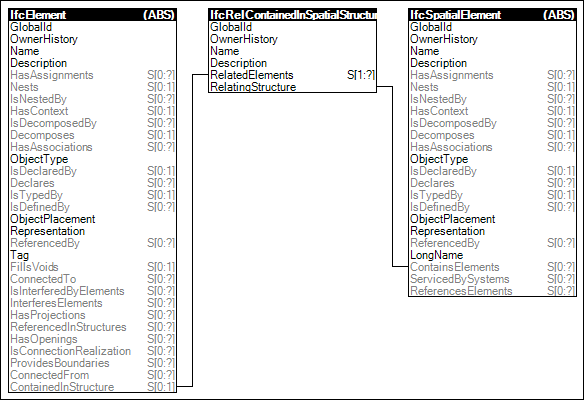

4.8.1.2 Spatial Containment
The Spatial Containment concept defines the relationship of physical elements, such as building elements, distribution elements, or furnishing elements as being contained within a spatial structure element.
Any subtype of
IfcElement may participate in two different
containment relationships. The first (and in most
implementation scenarios mandatory) relationship is the
hierachical spatial containment, the second (optional)
relationship is the aggregation within an element
assembly.
- The subtypes of IfcElement are placed within the
project spatial hierarchy using the objectified relationship
IfcRelContainedInSpatialStructure, refering to it by
its inverse attribute
SELF\IfcElement.ContainedInStructure. Subtypes
of IfcSpatialElement are valid spatial
containers.
- The subtypes of IfcElement may be aggregated into an
element assembly using the objectified relationship
IfcRelAggregates, refering to it by its inverse
attribute SELF\IfcObjectDefinition.Decomposes. Any
subtype of IfcElement can be an element assembly, with
IfcElementAssembly as a special focus subtype. In this
case it should not be additionally contained in the project
spatial hierarchy, i.e. SELF\IfcElement.ContainedInStructure
should be NIL.
Figure 79 illustrates an instance diagram.
 |
Figure 79 — Spatial Containment |
 Link to this page
Link to this page